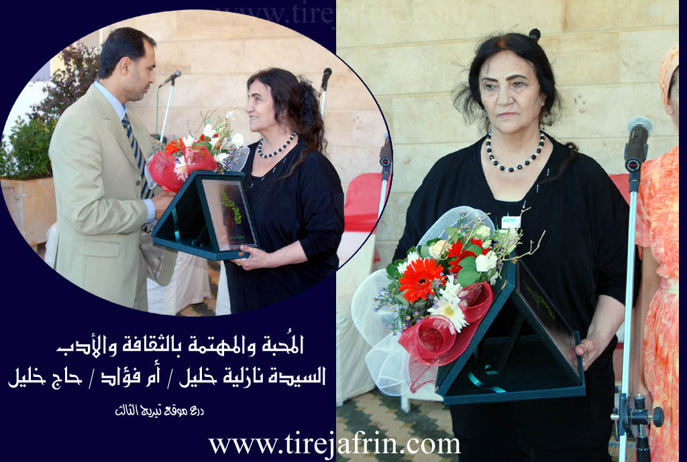

General Information
Nahiya (Subdistrict)
Reco
Also Known As
Hac Xalîl, Haj Khalil, Hec Xelîl, Hecxelîl, Heç Xelîl, Heşxelîl, Me'emik, Sirtê Korê, Xec Xelîl, Ĥec Xelîl, حاج خليل, Darbaz
Tribes
Gûlîjêrin, Şaxçaliyan
Families, Clans, etc.
'Erûys, 'Erûys, Biliş, Bilê, Ehdo, Elwîtê, Elşêr, Girû, Gunêş, Hec Xelîl, Hecû, Kûsa, Ma'mik, Ma'mûk, Mala Bekir, Mala Bekû, Mala Biliş, Mala Bilê, Mala Ehmed, Mala Ehmû, Mala Elwîtê, Mala Erûs, Mala Fir'ê Reşo, Mala Girû, Mala Gûnês, Mala Hanîf Axa, Mala Hecû, Mala Kûsa, Mala Mehmê, Mala Memik, Mala Mist Kûşkar, Mala Misxerîbê, Mala Reşo, Mala Tekû, Mala Xecwînê, Mala Ûsê, Malbata Ale, Malbata Hibo, Malbata Mihemed Henîf, Malbata Reşo, Malbata Selman, Mehmed, Miskûşko, Misxarîbê, Tekû, Tetû, Xecwînê, Ûsê

Photos



Basic Information about Ĥec Xelîl
Source: Ax û Welat
Etymology: Named after Hec Xelîl, the father of the village founder Ma'mûk; previously the location was called Sirtê Korê
Foundation Date/Period: Approximately 225 years ago
Hills: Çiyayê Mîra, Çiyayê Bilêl
Shrines: Ziyareta Mehmê Elî, Ziyareta Mehemed Elî, Şêxmûs, Bilîlê Hebeş, Kêlşîr, Gilyaqîb
Ruins: Asarê
Other Landmarks: Sirtê Korê
Source: Khalil Sino
Etymology: Named after the founder, Hec Xelîl, who migrated from Xeyam
Foundation Date/Period: Approximately 250 years ago
Wells: Bîra Elwîtê, Bîra Sînê
Other Landmarks: Lçê, Sehê Guleyan, Sehê Camiyê
Summaries
I. Summary from TirejAfrin Site (English) of Ĥec Xelîl
Source: https://www.tirejafrin.com/site/kura%20afrin%20%20%20Reco%20-%20haj%20xalil.htm
It is stated in the book Çiyayê Kurmênc / Efrîn / A Geographical Study: Xec Xell (Hec Xelîl): /4033 inhabitants - 267 hectares - 2 km - 640 m/:
Etymology
The origin of the name "Xec Xell" is a compound of two names: the first is female, "Xec" (from Xedîce), and the second is "Xelîl"; they were the first inhabitants of the village. The letter "X" in Xec changed to "H" to facilitate pronunciation, but residents of the neighboring villages and the people of the village still pronounce the name in its old form, meaning Xec Xell.
Geography and Location
It is a large village located on a limestone plateau, and it is a prosperous village. To its northwest, in Çiyayê Mîra, iron ore exists.
It is stated in the book Efrîn... Her River and Her Green Hills: Hec Xelîl is a village in Çiyayê Kurmênc that follows the sub-district of Reco, district of Efrîn, governorate of Heleb. It is a large village located atop a wide, undulating summit of a limestone plateau, overlooking agricultural lands with alluvial soil to the east. It is 5 km away from the town of Reco towards the east.
Boundaries
It is surrounded by slopes on three sides (Western, Eastern, Southern). On the northern side, it is bordered by a high mountain range and the villages of Mamalî and Holîlo. To the south, there is a slope, a fertile plain, the Xeta Trênê (railway line), and the village of Mûsêk Obasî. To the east, there is a slope, a valley, and at a distance of 1 km, the village of Kûranlî. To the west, there is a slope, a plain, a Otoştrad (highway) (round trip), and the town of Reco.
Infrastructure and Services
The number of its houses is approximately 250, and its age is about 500 years. Its houses are stone-mud with wooden roofs, while the modern ones are cement; it has developed architecturally such that the construction of modern villas dominates the center of the village. It has an electricity network, drinking water, two schools (primary and preparatory), an old mosque in the center of the village, some shops, and a telephone network taken from the town of Reco. The municipality was established there in 1983. In the center of the village, there is a square called Gorepana Serok Hafiz el-Esed (President Hafez al-Assad Square).
Economy
There are several presses for pressing olives in the village. Its residents work in rain-fed agriculture on an area of 267 hectares (with olives, grains, legumes, and vineyard trees) alongside raising sheep and goats. It is connected to the sub-district by an asphalted Otoştrad (highway) up to the center of the village. On the western side of the village, there is a Victory Arch, considered the most beautiful entrance in the Efrîn region. Currently, most of its residents are present in the cities of Heleb and Efrîn and come to the village for summer vacationing and harvesting the olive crop.
Social Structure and Notable People
Among its most important families are: (Malbata Mihemed Henîf, Malbata Reşo, Malbata Selman, Malbata Hibo, Malbata Ale), and they were the first to inhabit the village. The village of Hec Xelîl is considered one of the old villages in the region. The mukhtar of the village is Mihemed Elî Reşîd Bilal.
Among the holders of higher degrees in the village:
Selah Şêxo (PhD in Orthopedic Surgery / Russia)
Dr. Elya Mihemed Xelîl
It is mentioned that the artist Semîr Elî is one of the sons of this village. Among the people of the village working in the artistic field are:
The artist Berwar
The buzuq player Lawend
The buzuq player Heval Hibo
The buzuq player Mistefa Hibo
One of the first makers of the buzuq instrument in the region, Mr. Mamo
The poet Nezîr Palo (Hibo)
The buzuq player Kemîran Hibo
The organ player Ehmed Reşîd (Ehmed Net)
Ehmed Rengîn
Mrs. Nazliye Xelîl (Um Fuad) undertook the printing of the diwan of the poet Hamid Bedirxan at her own private expense.
Sources of Information:
- Book: جبل الكرد (عفرين) دراسة جغرافية Çiyayê Kurmênc (Efrîn): A Geographical Study by د. محمد عبدو علي Dr. Mihemed Ebdo Elî.
- Book: عفرين .... نهرها وروابيها الخضراء Efrîn... Her River and Her Green Hills by عبدالرحمن محمد Ebdulrehman Mihemed from the village of Qetme.
- Studies of Navenda Tirej Soft / Ebdulrehman Hacî Osman.
- Some residents of the villages.
Preparation and Execution: Manager of Tirej Efrîn site: Ebdulrehman Hacî Osman 20/12/2013
II. Summary of Ĥec Xelîl from Ax û Welat
Source: https://www.youtube.com/watch?v=G6nz9XLdbCY
The village of Darbaz, located in the Afrin region, is characterized by its agricultural lifestyle and the presence of traditional community figures who fill gaps in modern services. The transcript focuses heavily on the life and work of a prominent resident known as Meta Zeyneb (Aunt Zeyneb), who serves as the village's traditional ophthalmologist or "toxtor." While the specific founding date of Darbaz is not mentioned, the narrative highlights the social connectivity between villages in the region, particularly through marriage and specialized labor.
Zeyneb describes her origins in the village of Çençelî before moving to Darbaz upon marriage. She identifies her lineage through her father, Reşîdê Ehdo, and her uncle, Hebeşê Ehdo, indicating the presence of the Ehdo family line in her native village. This connection illustrates the movement of families between the settlements of the region. Zeyneb has lived in Darbaz for decades, having started her practice as a healer when she was a young girl, approximately ten or twelve years old. She is now the mother of seven children.
The social structure of Darbaz and the surrounding area is depicted as deeply agrarian. The residents are primarily farmers ("cotkar"), and their labor exposes them to occupational hazards such as dust, chaff, and metal shards entering their eyes. Zeyneb treats these ailments using traditional methods, often utilizing a cloth or paper placed on her tongue to extract foreign objects. Her reputation extends well beyond Darbaz. She describes obtaining supplies, specifically clean cloths, from larger urban centers like Heleb (Aleppo) and Efrîn, linking the rural village to the major cities of the wider region.
A significant aspect of the village's interaction with the broader geography is the weekly market day. Zeyneb travels to Rajo every Saturday ("şemiyê") to attend the market ("Bozorê Rajo"). This weekly migration to Rajo serves as a central economic and social event where she treats patients from various areas from morning until the call to prayer. Her practice operates on a sliding scale based on the financial status of her patients; while she accepts payments ranging from 50 to 300 units of currency, she emphasizes her willingness to treat the poor and those unable to pay for free. This reflects a communal ethos within Darbaz and the neighboring villages, where specific individuals hold distinct roles that support the collective well-being of the population.
II. Summary of Ĥec Xelîl from Ax û Welat 2
Source: https://www.youtube.com/watch?v=D053Y3Xyce0
The village of Hec Xelîl, located in the Raco district of the Efrîn region, was founded approximately 225 years ago. According to the elder Sebrî Hibo, the founder was Ma'mûk, the son of Hec Xelîl, who migrated from the Dîlok (Antep) area. Upon arrival, they settled at a location originally called Sirtê Korê before renaming the settlement Hec Xelîl. While the Ma'mûk lineage—which later split into the Bilê and Mehmed families—established the modern village, a single household known as Mala Tekû (later called Tetû) was already present.
Over time, the village population grew through the arrival of various groups. The Hecû family, originally nomads from the Gûlîjêrin tribe, settled there after a conflict with other villagers. Other arrivals included the 'Erûys, Kûsa, Ûsê, Gunêş, Xecwînê, Misxarîbê, and Biliş families. The Girû and Elwîtê families are noted as being of Şaxçaliyan origin. Following the events of 1914, Armenian families also sought refuge in the village; while most moved on, the Miskûşko family remained, with notable members such as Mistefa Xerîb and his wife Meryem.
The village is historically significant for its sacred sites. The most prominent is Ziyareta Mehmê Elî (or Mehemed Elî). There is debate regarding his identity; some locals claim he was an Ottoman officer, while others suggest a Yezidi origin, noting that Wednesday is the primary day for visitation. Nearby shrines include Şêxmûs and the mountain-top site of Bilîlê Hebeş. Another site, Kêlşîr (also known as Gilyaqîb), is considered the sister of the other saints; local women visit this spot to pray for lactation or health issues.
Economically, Hec Xelîl was known for trade rather than extensive agriculture. Residents often worked as merchants traveling to Heleb and Şam. Unlike the wealthy Hanîfe Axa, most villagers did not own vast olive groves. In the 1950s, a Russian company excavated iron mines in the nearby Çiyayê Mîra, leaving behind trenches and ruins known as Asarê.
The village is also home to unique characters and cultural figures. Meta Zeynep, a traditional healer from the Çençeliya village, is famous for treating eye ailments using her tongue. Apê Ehmed, a blind shopkeeper who returned from Tebqa, is renowned for navigating the village and identifying neighbors solely by voice. Culturally, the village has produced artists such as the poet Nezîr Palo and the singer Semîr Eytan, as well as the artist Perwer (born Farûq).
II. Summary of Ĥec Xelîl from Ax û Welat 3
Source: https://www.youtube.com/watch?v=nmyw8LpGvns
The village of Hec Xelîl (also referred to as Xaşxelîl), located in the Rajo district of the Afrin region, was established approximately 225 years ago. According to village elder Sebrî Hibo, the founder was a man named Ma'mik, son of Hec Xelîl. He migrated from Dîlok (Gaziantep) and settled in this wooded area, naming the new settlement after his father. The original lineage of Ma'mik eventually split into distinct branches, including Mala Bilê and Mala Mehmê. Over time, the village absorbed other families. The Mala Hecû, a group of Koçer (nomads) originally from Gûlî jêrin, were invited to settle by the founders. Other families such as Mala Tekû, Mala Erûs, Mala Kûsa, Mala Girû, and Mala Elwîtê also made Hec Xelîl their home. Notably, the village became a refuge for Armenians during the events of 1914–1915; the family of Mala Mist Kûşkar, specifically Mistefa Xerîb and his wife Meryem, settled there and worked as blacksmiths.
The geography of Hec Xelîl is defined by its lack of natural water sources; residents historically relied on rainwater cisterns. The area is known as an "iron region." Between 1956 and 1958, a Russian company excavated trenches in the area to mine iron. To the north lies Çiyayê Mîro, named after a Mîr who used the mountain as a summer residence, and to the east lies Çiyayê Bilil. Despite the water scarcity, the village became a regional hub for education and commerce. In the era before widespread schooling, students from seven or eight surrounding villages, such as Qîsim and Şêx, traveled to Hec Xelîl to attend its mosque and school. The village is noted for producing many doctors, engineers, and intellectuals, including the first local mayor Ehmed Fewzî Elî. Culturally, the village is home to artists like the singer Semîr Elî and poets Nezîr Palo and Perwer (born Farûq).
Religious life in Hec Xelîl centers around several significant shrines. The most detailed is Ziyareta Mehmê Elî (or Mehemed Elî), shared with the neighboring village of Kûra. Residents debate its origins; some claim Mehmê Elî was an Ottoman officer, while others suggest he was an Êzîdî figure, noting that Wednesday, the shrine's visitation day, is sacred in the Êzîdî faith. Next to this shrine lies Şêx Mûs. On the mountaintops, there is a site called Bilîlê Hebeş. Another sacred spot, Gulyaqûb (also known as Kelşîr), is traditionally visited by nursing mothers seeking milk; legend holds that the milk of Gulyaqûb continued to flow for her children even after her death. These sites remain active places of pilgrimage for healing and vows.
II. Summary of Ĥec Xelîl from Khalil Sino
Source: https://www.youtube.com/watch?v=jHnUk3BGXUw
The village of Hec Xelîl, located in the Raco district of the Afrin region, was established approximately 250 years ago. According to local oral history recounted by elder Hisên Henan Reşîd, the village takes its name from its founder, Hec Xelîl, who migrated to the area from Xeyam. Before his arrival, the location was known only as ruins (xirabe). Hec Xelîl arrived with his brother, and the settlement grew from their lineage. The early population expanded through the integration of different families, including Mala Hecû, who became neighbors and eventually merged into the village fabric. The core families identified in the village history include Mala Bilê (also associated with Mala Fir'ê Reşo), Mala Ehmed, Mala Bekir (or Mala Bekû), Mala Ehmû, and Mala Reşo. The speaker Hisên identifies himself as belonging to the Mala Memik branch, noting a historical figure named Elşêr in their lineage.
Hec Xelîl is situated roughly 2 to 3 kilometers east of Raco and about 30 kilometers from Bilbil. Historically, the residents were farmers and laborers, but the village underwent significant changes with the introduction of education. Residents emphasize that academic certificates (şehadet) entered the village in the 1940s and 1950s, leading to a high number of doctors, lawyers, and engineers in subsequent generations. The village is currently home to about 240 to 250 households. It serves as a local medical hub due to a well regarded pharmacy that draws patients from neighboring villages like Baedîna.
Culturally, the village maintains memories of elaborate wedding traditions that have since faded. In the past, weddings lasted seven days, later reduced to three, and finally to just a few hours in modern times. Festivities took place at specific local landmarks such as Sehê Guleyan (Square of Bullets) and Sehê Camiyê (Mosque Square). These events featured horse riding and a theatrical tradition involving a "henekçî" (joker) or Karakoz (a type of clown or shadow puppet character), who would perform comedy.
Daily life in the past was characterized by hard physical labor and community self sufficiency. Elder Fidan recalls fetching water from specific wells named Bîra Elwîtê and Bîra Sînê, as well as a spot called Lçê, using donkeys before modern infrastructure existed. The community was tight knit, with neighbors contributing food and resources for weddings and funerals, a custom that has diminished due to economic hardship. Today, the village faces challenges common to the region, including water scarcity forcing residents to buy expensive trucked water from Ermîtê, unreliable electricity, and the emigration of youth to places like Germany and Istanbul. Locals refer to these emigrants as "Tuyoor al Muhajira" (migratory birds). Despite these difficulties, the village retains a reputation for its educated population and preserves its history through the stories of elders like Hisên Henan Reşîd and Fidan.
Transcriptions and Subtitles
| Source | Video | Subtitles | Transcript |
|---|---|---|---|
| Ax û Welat 1 | Watch Video | Download SRT | View Transcript |
| Ax û Welat 2 | Watch Video | Download SRT | View Transcript |
| Ax û Welat 3 | Watch Video | Download SRT | View Transcript |
| Khalil Sino 1 | Watch Video | Not Available | View Transcript |
Foundation/Origin Information of Ĥec Xelîl
The Mohammed Hanif family, Al Rashoo, Al Salman, Al Habbo, and Al Aala were the first to inhabit the village.
Source: TirejAfrin Site
Established by families who migrated from the regions of Amik and Dîlok (Antep). It was founded by a man named Hec Xelîl at a site called Sirtê Korê. The community grew from three primary clans, including those of Mola Bilêl and Mola Mihemed. In 1914, Armenian families passed through, and some integrated into village families.
Source: Ax û Walat Transcript
Founded by Hec Xelîl, who migrated from Dîlok (Antep) with two other families, those of Bilêl and Mihemed. In 1914, an Armenian family of shoemakers known as "Mala Mîsko Kûşkorê" settled in the area.
Source: Ax û Walat Transcript
Founded by a man named Hajj Khalil. Established on the site of old ruins, the village grew through the settlement of various families who became neighbors and intermarried.
Source: Halil Sino Transcript
Possible Village Name Meaning of Ĥec Xelîl
The origin of the name "Xec Xelîl" is a compound of two names: the feminine "Xaj" (from Khadija) and "Khalil", who were both first residents of the village.
Source: TirejAfrin Site
The village was founded by a man named Hec Xelîl. Its previous name was Me'emik.
Source: Ax û Walat Transcript
The village was originally known as Ma'emikê or Serto Korê and was founded by Hec Xelîl.
Source: Ax û Walat Transcript
Named after its founder, Hajj Khalil.
Source: Halil Sino Transcript
V. Links
- Tirej Afrin:
https://www.tirejafrin.com/site/kura%20afrin%20%20%20Reco%20-%20haj%20xalil.htm - Ax û Welat:
https://www.youtube.com/watch?v=zY990bDOFVw - Drone:
https://www.youtube.com/watch?v=SS8sQEoknJM - Videos:
https://www.youtube.com/watch?v=bazvy5yMFnk - Link:
https://www.youtube.com/watch?v=dSSsfsfB0Go - Link:
https://www.youtube.com/watch?v=9mXuU16okks - Link:
https://www.youtube.com/watch?v=D053Y3Xyce0 - Link:
https://www.youtube.com/watch?v=nmyw8LpGvns - Ax û Welat:
https://www.youtube.com/watch?v=G6nz9XLdbCY - Khalil Sino:
https://www.youtube.com/watch?v=jHnUk3BGXUw